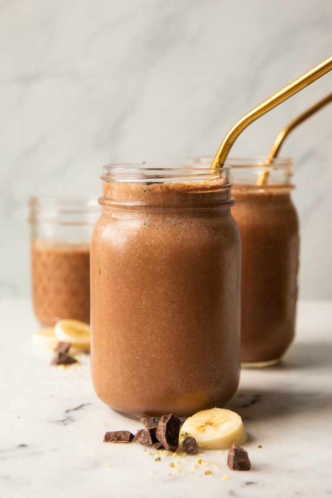

Chocolate Banana Smoothie

This Chocolate Banana Smoothie Is So Easy to Make!
It really doesn’t get any easier than this Chocolate Banana Smoothie recipe. Or more delicious! Made with easy-to-find ingredients,
I love throwing this smoothie together for a quick breakfast or post-workout snack.
Ingredients
- Vanilla Protein Powder – A plant-based vanilla protein powder adds nutrition and helps to thicken the smoothie.
You can also use a chocolate protein powder (or really any type of protein powder you want)!
- Cocoa Powder – A few tablespoons of cocoa powder bring chocolatey goodness to this smoothie recipe.
- Almond Milk – Any type of milk works in this recipe! I prefer almond or soy milk, but regular milk also tastes great.
- Frozen Banana – Slice up and freeze a banana the night before, or purchase frozen bananas at the grocery store to keep on hand! 1 medium banana is
about 2/3 cups frozen banana slices.
- Ice Cubes – Add ice cubes to the smoothie to thicken it and really make it a frozen treat! You can also freeze milk the night before for an extra creamy smoothie.
Directions
- Blend protein powder, cocoa powder, and milk of choice together.
- Add in a frozen banana and ice.
- Blend until smooth, add your favorite toppings, and enjoy!